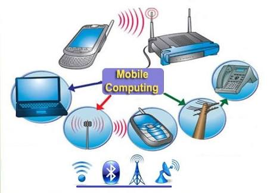

Mobile Computing Types
1-Personal Digital Assistant (PDA) Sometimes called pocket computers
2-PDAs are handheld devices that combine elements of computing, telephone/fax, Internet and networking in a single device. ...
3-Smartphones. ...
4-Tablet PCs. ...
5-Apple iOS. ...
6-Google Android. ...
7-Windows Phone. ...
8-Palm OS. ...
9-Symbian OS.

| The comparison |
mobile phones and smart phones |
Tablets |
| Primary use |
phone/voice/communication/text messeges |
surf web,video,chating |
| features |
virtual keyboard on screen |
virtual keyboard on screen |
| Connectivity |
Wi-fi / 3G/4G |
Wi-fi / 3G/4G |
LINKS
- main page
- Advantages
- Disadvantages
- Applications